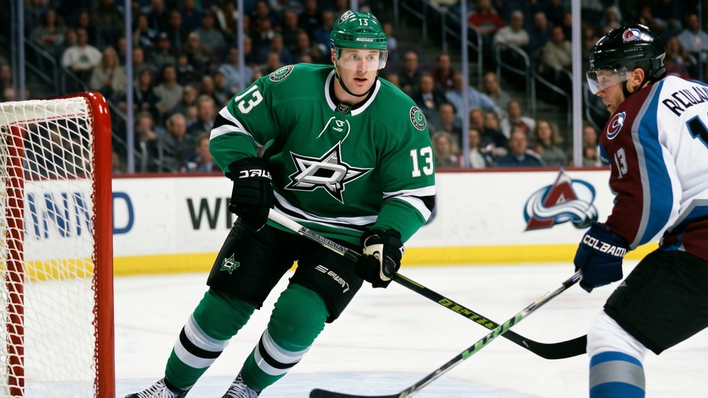

EIGHT WINS, $56.63 MILLION, $11.39 MILLION IN PROFIT: THE ST. LOUIS GET-RICH-LOSING SCHEME
The worst team in hockey spent like a contender, bled goals like one didn't, and still cashed the biggest check in the building.
 Mickey "The Mick" DonnellyColumnist, ex-goalie · The Penalty Box
Mickey "The Mick" DonnellyColumnist, ex-goalie · The Penalty Box
 St. Louis Blues has 8 wins. Eight. In 37 games. Nobody else in this league is below 9, and those teams cost $36.79M (
St. Louis Blues has 8 wins. Eight. In 37 games. Nobody else in this league is below 9, and those teams cost $36.79M ( Atlanta Thrashers) and $39.27M (
Atlanta Thrashers) and $39.27M ( Chicago Blackhawks). St. Louis spent $56.63M to field the worst roster in the 30-club league and finished the last calendar week of 2004 on a 5-game losing streak.
Chicago Blackhawks). St. Louis spent $56.63M to field the worst roster in the 30-club league and finished the last calendar week of 2004 on a 5-game losing streak.
And they made $11.39M in profit. You read that right. They lost, they lost, they lost again, and the money kept rolling in.
The last 10 games: 34 goals for, 49 against. They allowed 165 on the season, tied with  Pittsburgh Penguins for the most in hockey. The 13,964 people per game who showed up paid $78 each to watch that. They're the 9th-most expensive ticket in a 30-team league, and the product is the cheapest thing in St. Louis.
Pittsburgh Penguins for the most in hockey. The 13,964 people per game who showed up paid $78 each to watch that. They're the 9th-most expensive ticket in a 30-team league, and the product is the cheapest thing in St. Louis.
I went looking for a reason. A goalie standing on his head, a kid on the rise, some player carrying the whole damn thing by himself.  Barret Jackman77 is up 5 on the Development Index and sits at 83. He has 22 points in 37 games. That's your top guy. Nobody from St. Louis cracked the top 30 in scoring. Nobody. Not a single name. The next-best team with zero top-30 scorers also happens to have one of the three worst records in the league.
Barret Jackman77 is up 5 on the Development Index and sits at 83. He has 22 points in 37 games. That's your top guy. Nobody from St. Louis cracked the top 30 in scoring. Nobody. Not a single name. The next-best team with zero top-30 scorers also happens to have one of the three worst records in the league.
The room doesn't care because it's fine
Club morale sits at 91.1. That's 14th in the league, middle of the pack, nobody weeping. The room isn't broken. The room is comfortable. $56.63M and 8 wins and a 91.1 room: the players get paid, the coach gets to say "we competed," the GM gets to say "rebuilding year," and the owners get $11.39M.
I don't have a quote from the bench because they don't talk much when they're this bad. I have the sheet. I have the standings. I have a 5-game slide into the new year with 49 goals against in the last 10 and 29 points in 37 games. That's a 64-point pace. The St. Louis Blues Blues have not made the playoffs since their last Cup, which is zero, because they have never won one.
Here's what I want to know from the people spending the $56.63M: why is the product this bad at this price? Phoenix spent $47.81M and won 14 games. Chicago spent $39.27M and won 9. St. Louis dropped $56.63M and won 8. You're paying a premium for a discount product. That's not a rebuild. That's a grift with a logo.
The attendance number is the real offense
13,964 per game at $78 a seat. 37 home games so far and counting. You're subsidizing the worst team in hockey with your family's Saturday, and the men in the suits are taking the profit home and buying a boat. The players don't care because the room is fine. The coach doesn't care because the compete level is there. The owner cares because the number at the bottom is green.
The only man in St. Louis who might actually feel something is the 23-year-old defenseman sitting at 83 with 22 points. Everyone else on that roster is collecting a salary on the worst team in hockey, and the $11.39M in profit says the building will keep opening its doors tomorrow.